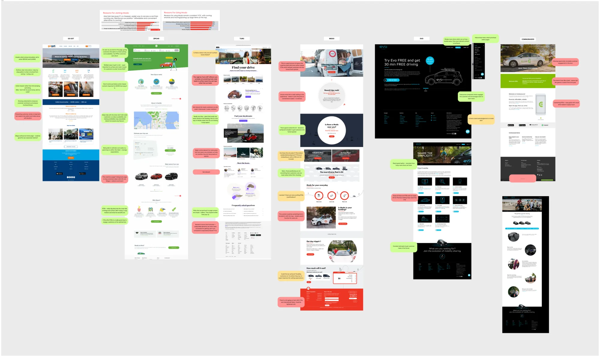
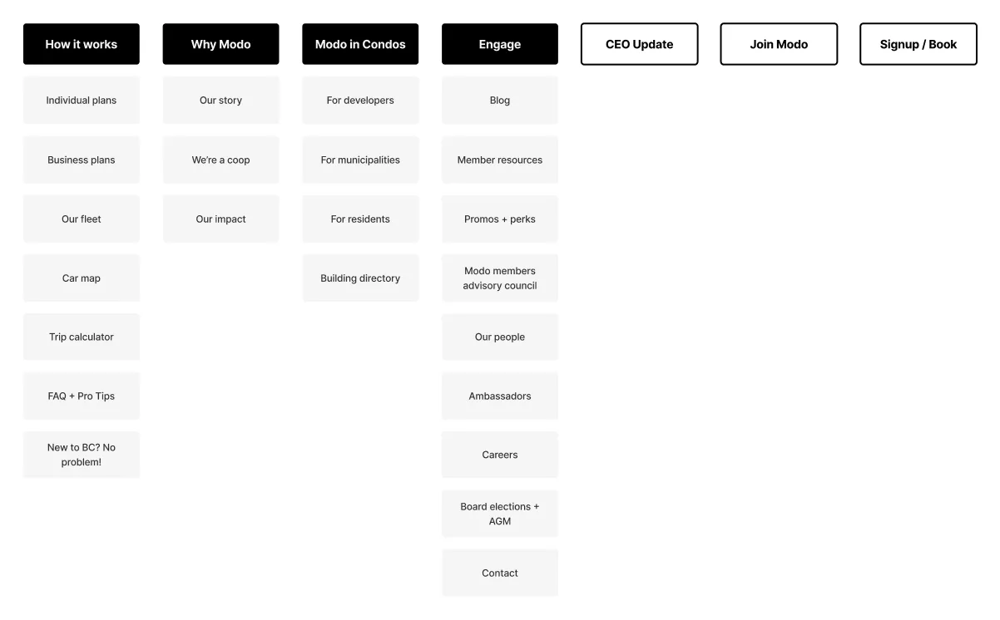
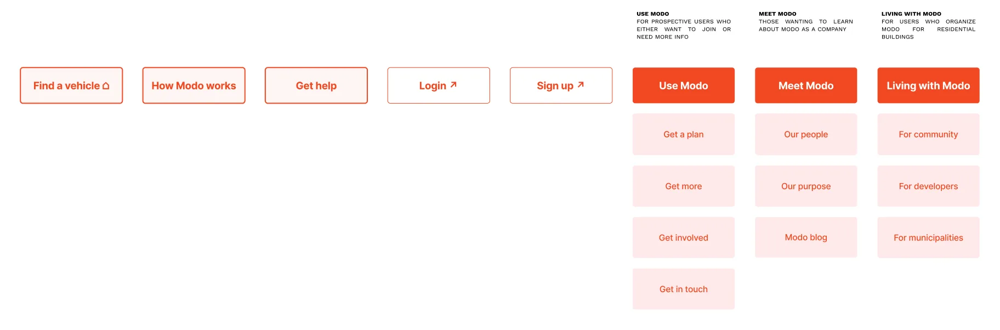
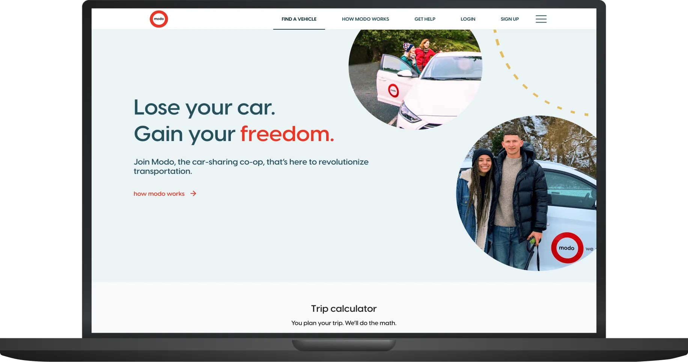
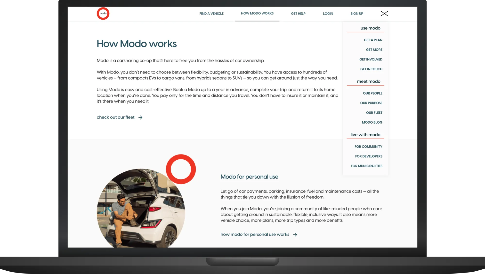
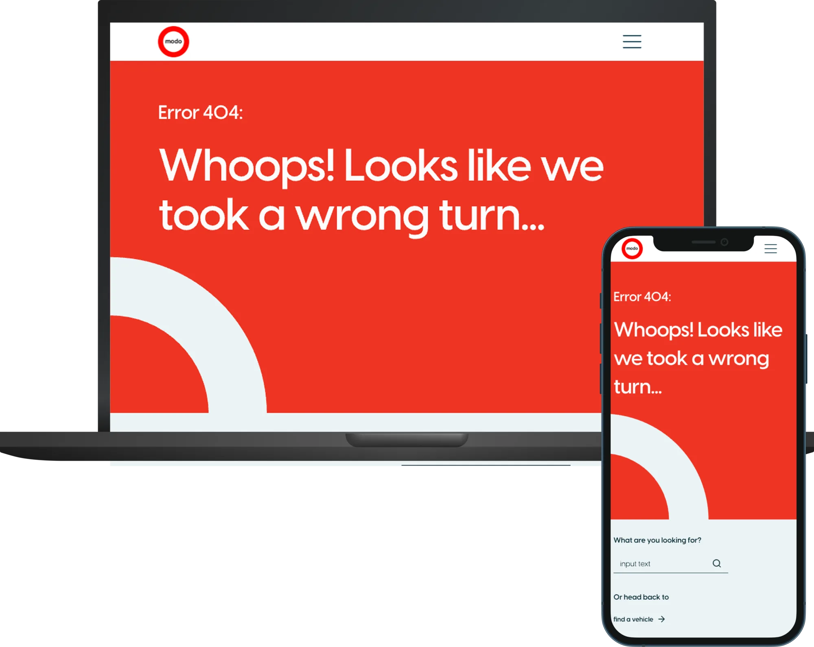

Modo: B2C Site Redesign
Vancouver's largest B Corp car sharing coop needed a complete business-to-consumer website overhaul to simplify the content experience across marketing and member touch points, aligned with a broader brand and app refresh.

Mary is an incisive thinker and creative problem-solver. When it came to designing a clear flow for new members to learn about carsharing, Mary brought empathy and pragmatism and supported the delivery of a successful project.
Jane Hope, Director of Marketing & Communications, Modo
Ask
Modo approached All Purpose Creative to re-platform and redesign their website, as their marketing team wanted a more efficient and autonomous content management process.
With many interest-holders updating content and adjusting user flows independently, the site had evolved into what the team described as a 'franken-site'. This resulted in duplicated content, unclear navigation paths, tacked-on pages, and inconsistent branding. The CMS also made it difficult for the marketing team to manage and update the site independently.
The brief included realigning the website and mobile app, overhauling the navigation, user flow, and sitemap, and conducting a full content strategy review to remove unnecessary 'fluff'. Ultimately, the fragmented site experience was creating confusion for prospective Modo customers and contributing to an increase in unnecessary queries to the Help team.
Insights
The All Purpose team rebuilt the site experience from the ground up. Starting with IA, led by me, we worked through each flow, page-by-page and considered what information was pertinent and what could be removed. A key through line was getting the user the information they needed at each crucial step in the decision process, allowing them to have confidence when securing a vehicle. We cut the number of steps between "I need a car" and "I've booked one."
The proposed architecture put five direct-to-page buttons on the home screen and three action-based drop-downs, 'Use Modo', 'Meet Modo' and 'Living with Modo'. That shaped the rest of the site, giving each piece of information a clear place to nest.
What I learned The site didn't have a navigation problem, it had a content problem. Once we agreed on the five things a prospective member actually needs to know, the IA and the menu restructuring became extremely clear.
Process
Discovery: Interviews with seven Modo interest-holders, a review of six competitor sites, a survey of 28 non-members, a partial content audit and a read of Modo's existing research.
Definition: Journey mapping with the Modo team across seven audience segments, then opportunities, IA, user flows, a style guide from Modo's app design system and a messaging framework.
Design and content: Page specs and content blocks, from low fidelity to high fidelity.
Testing: Five moderated sessions on the prototype, with findings feeding revisions. Most of the five non-members we tested with tried to click 'How Modo Works' from the hero, vehicle specs put off anyone who isn't a car person, and the how-it-works content ran long. We recommended trimming text, adding media and showing what happens after sign-up, and grouped the fleet by use case rather than by vehicle.
The FAQs were a significant undertaking. I reworked all of the major questions into clear groupings, so visitors oriented themselves first, as a member who needs urgent help or as someone looking to join, before narrowing down to their question.
Handoff: Modo's marketing team wanted to run the site without developer support, so most of it was built in Webflow, and the work then continued as a maintenance engagement. I worked closely with Jason Landry, the developer, running check-in meetings through the build so what I designed matched what could be built.
Two trade-offs came out of that:
- Webflow vs full autonomy: most of the site could be edited by Modo's marketing team, but the home page car selection and map tool were custom widgets with nothing equivalent in Webflow, so they had to be coded. Those still needed a developer, so this couldn't be a fully autonomous project for Modo's team.
- Map clarity vs map functionality: testing found the map noisy and hard to read for people who don't think about cars. But Modo's team wanted more accurate vehicle icons, and people expect to find and book particular vehicles from the map, so simpler and more capable pulled in different directions. We chose clarity for users.
The interviews also gave the developer-facing requirements that shaped the design: site analytics, gated or drip-fed content, and a marketing site kept separate from the Engage app.
Contribution
- Worked with interest-holders to align the website experience by facilitating workshops and running interest-holder interviews
- Led UX and information architecture redesign of Modo's B2C marketing website, primarily focusing on restructuring core new user flows and overall site navigation
- Worked within Modo's accessibility constraints and existing brand system, extending it rather than replacing it: a secondary colour palette for cards, pill design and other design system pieces
- Redesigned the map widget and fleet selection tools, supported user testing, and implemented improvements that streamlined the vehicle selection process
- Reworked the Q&A page to group similar questions together, allowing site visitors to get their questions answered quickly
- Supported discovery alongside design
Tools
Outcome
The redesigned marketing site delivered a streamlined digital experience for Modo and a more coherent and navigable website that aligned with the mobile app and reflected the coop's brand more consistently across various touchpoints.
Our engagement saw an increase in content clarity and a more streamlined new member journey. Most importantly, the Modo team told us there was a significant decrease in Help Desk calls.
Media
Here are some key artefacts from the project, with captions explaining each of them.





